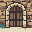
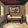
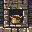
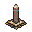
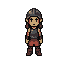
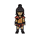
A ludus management game · Capua · a.u.c. DCCLXXXII
Velarium
Train gladiators, feed the house, rent them to magistrates — if the school earns fama, you may stage a munus yourself.
You are a lanista in Capua. You own a ludus and a familia gladiatoria. You are not the emperor’s procurator. You do not start in Hollywood’s Colosseum.
Steam control is a placeholder. There is no store listing yet. Open questions live in marketing/BRIEF.md on GitHub, not on this page.
I
Infamis. Still in business.
A lanista. You lease men to aediles and rich editores for a little coin if they walk out, and a lot if they do not. When the ludus has fama and a man with a palma, the duumviri may let you stage a munus of your own.
Infamia closes the curia. The harena does not. There is no path to consul. The velarium is only the awning — the repo name, not the office.
The page will not promise:
- Sexual content
- Child fighters
- Becoming consul
Honest grit. Cartoon KO: a few red pixels and a prone sprite, NES/SNES presentation, Pompeii kit. Death is an asset loss, not a gore reel.
II
The day
One day is one turn. Three doors: the house, the forum, the sand.
-
Ludus
Feed, drill, roof
Cells, kitchen hearth, medicus stall, the porta. Household mouths eat even when they do not fight.
-
Locatio
Rent the type they asked for
Sweat is cheap. A corpse is dear. Then you have no man. Gaius’s ratio, Capuan greed for shows.
-
Munus
Host only when earned
Locked until fama and a palma in the house. Same sand, your purse on the line, mitte or iugula in your hand — for an afternoon, not a career in the curia.
III
The yard
Four armaturae and the household. South-facing idles from the PixelLab pack already in the tree. Wave 3 motion is later. No new generate for this site.
- Murmillo Fish-crest · scutum
- Thraex Griffin · sica
-
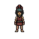
Retiarius Net · trident -
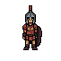
Secutor Smooth helm - Household Undyed tunic
- Palus
- Hearth
- Cellae
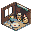
Medicus- Porta
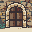
Night
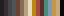
Authored NES strip — production colour lock, not a mood board.IV
Current status
- PlayableM2 console ludus — day loop, locatio, rooms, night ops, hosted munus when unlocked
- GodotCourtyard project restorable after PR #12 (Sim
net8.0;net10.0) - EditorUnzip
Godot_v4.6.3-stable_mono_*.ziptotools/godot-editor/is still local — not in CI - HoldsNo combat virtus / vigor / palmae retune this sitting; no engine switch before the console loop is loved
Source and agents live in the repository. Plans (price, demo, publisher) are open in Notion.